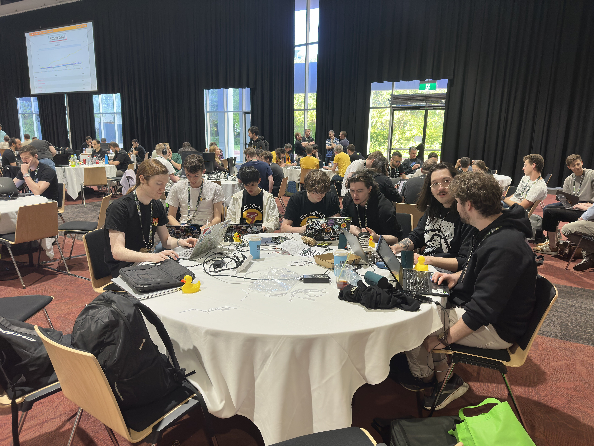

Reversing Writeups - BSides Canberra CTF 2023
Reversing Writeups - BSides Canberra CTF 2023

Overview⌗
During the school holidays, I had the opportunity to attend BSides Canberra 2023, which was a 3 day conference held near the end of September, in the National Convention Center Canberra.
Along with many great talks, it featured three ‘villages’ including hardware, lockpicking and wireless. With 3000 people attending, this was the largest hacking conference that I had gone to, and it was a lot of fun!
Cybears hosted this year’s CTF event with unique comic style graphics for the CTF site. They had some great challenges, and the competition hall was packed with 193 teams participating!
Overall, we came 3rd in the CTF, and recieved a massive cardboard cheque of $250 and a medal - congrats to skateboarding roomba and Grassroots Indirection on 1st and 2nd!
In this blog post, I will provide an in-depth walkthough to prnginko, a crypto/rev challenge which caused me a lot of pain, and a brief writeup of useless, another rev challenge.
Challenge Overview⌗
I will mainly focus on prnginko, as I want to detail the many roadblocks we faced along the way, instead of going straight to the solution.
| Challenge | Category | Solves |
|---|---|---|
| prnginko | crypto/rev | 8 |
| useless | rev | 9 |
If you want to follow allow/see the binary for yourself, download files here
prnginko (crypto/rev) - 8 solves⌗
Multi-bet with SportsBear!
nc prnginko.chal.cybears.io 2323
We are given a binary prnginko and a service to connect to. Upon running the binary, we are presented with the game and a message suggesting the goal to be getting a “perfect game”. The game includes a board consisting of pins and a ball which randomly bounces either left or right when it hits a pin, similar to the Plinko game.
We have two options - g to play a game and earn points, or p to practice. We can play 10 games in total and need to get the maximum score of 16 each time to win.
“prng” in the challenge name suggests that we need to reverse engineer the program to find the PRNG it uses to determine if the ball will go left or right, and crack it to find what future game plays will yield. Then, by being able to predict the future, we can use the practice games to re-roll the PRNG until we know the next game will yield a max score of 16, and then use one of our game rounds.
A quick explanation of why we can do this - PRNGs (pseudo random number generator) usually use a seed and some other parameters to generate the next “random” number using some math. If the same seed and same parameters is used, then the next random number it generates will be the same. Thus, if we are able to recover the seed and know the parameters, we can predict the values it will generate in the future.
Hopping into IDA, we can see the 160 points required to win, which is getting 16 points ten times - a perfect game.
Note that function and variable names were stripped in the binary, so we had to go through and rename everything relevant as always.
After some reverse engineering, we find a few functions that together form a PRNG based on the program’s current runtime.
There are three functions:
get_timeseed():
- Is only called once, at the start of the program
- Gets a value affected by time using
clock_gettime() - Sets
time_seedto the amount of seconds, plus1000000000times the amount of nanoseconds
__int64 get_timeseed()
{
struct timespec tp; // [rsp+10h] [rbp-20h] BYREF
unsigned __int64 v2; // [rsp+28h] [rbp-8h]
v2 = __readfsqword(0x28u);
if ( clock_gettime(7, &tp) )
return 4294967293LL;
time_seed = LODWORD(tp.tv_sec) + 1000000000 * LODWORD(tp.tv_nsec);
return 0LL;
}
prng_subpart():
- Does some math with
a_valueandtime_seed - Changes
a_value(HIDWORDgets the higher 32 bits, same as shifting right by 32 bits) andtime_seedbased on the math calculation - Returns the result of the math calculation
a_valueis set to1at the start of the program
__int64 prng_subpart()
{
__int64 var8; // [rsp+0h] [rbp+0h]
*(&var8 - 1) = (unsigned int)a_value - 0xC5D8A3FF84711ALL * (unsigned int)time_seed;
a_value = HIDWORD(*(&var8 - 1));
time_seed = *(&var8 - 1);
return (unsigned int)time_seed;
}
prng_main():
prng_main()callsprng_subpart()only whenshift_r_valueis below zeroshift_r_valueis the amount that theprng_outputis right shifted- The function returns the lowest bit of
prng_output >> shift_r_value shift_r_valueis initialized to-1at the start, soprng_outputis called at the start
__int64 prng_main()
{
if ( shift_r_value < 0 )
{
shift_r_value = 31;
prng_output = prng_subpart();
}
return ((unsigned int)prng_output >> shift_r_value--) & 1;
}
As global variables, the initial values of shift_r_value and a_value were located in the .data section, or just double click in IDA to find them.
The main takeaway from these functions is that we know all of the values, except time_seed. time_seed is the only value that is causing the output to not be identical - it’s the only value that changes “randomly” each time we run the program, so we need a way to recover it.
Of course it is a horrible idea to seed a PRNG based on time, but it uses nanosecond precision which we cannot accurately predict on a remote instance.
However, if we did know the value of time_seed, that’s all that’s left to input into our own PRNG and predict the future!
To start off simple, let’s write out the PRNG functions in Python.
def get_timeseed():
# we'll figure out how to get this later ;)
timeseed = int(input("Enter timeseed: "))
return timeseed
def prng_subpart():
global time_seed, a_value
output = a_value - 0xC5D8A3FF84711A * time_seed
a_value = output >> 32
time_seed = output
return time_seed
def prng_main():
global shift_r_value, prng_output
if shift_r_value < 0:
shift_r_value = 31
prng_output = prng_subpart()
output = (prng_output >> shift_r_value) & 1
shift_r_value -= 1
return output
prng_output = None
shift_r_value = -1
a_value = 1
time_seed = get_timeseed()
for i in range(8):
print(f"Value of output {i}: {prng_main()}")
But how do we know this is correct? (foreshadowing: it’s not quite…)
In IDA we can see time_seed is stored in .bss, so let’s test our PRNG replication by debugging and just grabbing the value directly.
Using info file to locate address of .bss, we dump .bss to find time_seed, which as an unsigned int is a 4 byte value at offset 0x44, same as what IDA shows.
Next, we chuck this time_seed value into our own PRNG and see if our outputs correlates with the game’s outputs.
It indeed does! 0 indicates that the ball goes left, and 1 indicates the ball goes right.
A Roadblock⌗
However, there is one flaw I would like to point out here - there is a mistake in our Python PRNG. This subtle mistake cost hours of debugging and pain - I said that I would eat breakfast after solving the challenge. I ended up eating lunch instead.
You may wonder, well, the PRNG seems to be giving the correct output though? It predicted 8 values correctly. That is true, until you go after 64 values.
It turns out that we forgot to account for the C datatypes in python! output (var8) is an int64, which means if we go over 2**63 or under -2**63, it will wrap around, same as mod 2**64. We didn’t account for this - thus eventually after two outputs of prng_subpart, time_seed became large enough to surpass this limit and provide incorrect outputs.
To account for this we will add output = output % (2**64) and time_seed = output % (2**32).
The fixed code is now:
def get_timeseed():
# we'll figure out how to get this later ;)
timeseed = int(input("Enter timeseed: "))
return timeseed
def prng_subpart():
global time_seed, a_value
output = a_value - 0xC5D8A3FF84711A * time_seed
output = output % (2**64)
a_value = output >> 32
time_seed = output % (2**32)
return time_seed
def prng_main():
global shift_r_value, prng_output
if shift_r_value < 0:
shift_r_value = 31
prng_output = prng_subpart()
output = (prng_output >> shift_r_value) & 1
shift_r_value -= 1
return output
prng_output = None
shift_r_value = -1
a_value = 1
time_seed = get_timeseed()
for _ in range(10):
for i in range(8):
print(f"Value of output {i}: {prng_main()}")
print()
Back to the challenge…⌗
With that issue fixed, we can continue on with the challenge.
We have successfully recreated the PRNG and can predict future outputs given time_seed, now only one problem remains - how can we retrieve the value of time_seed?
As mentioned before, time_seed is affected by time in nanoseconds, which would be close to impossible to simulate on a remote connection.
Another idea is to brute force. As it is a unsigned int32, we can try 2**32 possible values for time_seed, until our PRNG output seems to match up with the game’s output. However, this is also not possible since although 2**32 is not too large, there is a timer set for 5 minutes, and with a quick test it would take way too long to brute force in under 5 minutes (at least in python).
Our last option is to use an SMT solver, such as z3. We can simply get a bunch of outputs from the game, then tell z3 that it should try to find a value of time_seed that causes our PRNG to output the same as the game.
For example, if a round of our game outputs LRRLRLLL where L is left and R is right, we can change it to 01101000, and tell z3 that the first output of our PRNG should be 0, the second should be 1, and so on.
First, we define time_seed as a 64-bit value.
time_seed = BitVec('time_seed', 64)
But wait - why should it be 64-bits when we know it is actually a 32-bit value?
Well, if we look at the decompilation again, we can see time_seed is being set to var8, and var8 is 64 bits. This means that the first calculation can result in a 64 bit value, causing time_seed to be set to a value larger than 64 bits.
__int64 prng_subpart()
{
__int64 var8; // [rsp+0h] [rbp+0h]
*(&var8 - 1) = (unsigned int)a_value - 0xC5D8A3FF84711ALL * (unsigned int)time_seed;
a_value = HIDWORD(*(&var8 - 1));
time_seed = *(&var8 - 1);
return (unsigned int)time_seed;
}
This issue caused us a lot of pain as well.
Anyways, we then collect the game’s PRNG outputs from the result of some practice rounds.
def get_game_output():
p.recvuntil(b"> ")
p.sendline(b"p") # play practice round
outputs = []
for i in range(8):
game_output = p.recvline().decode()
if game_output[0] == "L":
outputs.append(0)
elif game_output[0] == "R":
outputs.append(1)
p.recvline()
p.recvline()
return outputs
...
trials = 8
game_outputs = []
for trial in range(trials):
game_outputs.extend(get_game_output())
print(f"{game_outputs = }")
Doing 8 trials, which gets 64 bits from the game should be enough for z3 to compute a unique solution (you might imagine if we had only 1 trial, there could be many possible time_seeds that can result in the same output).
Then we simply tell z3 that these values should be equal, and also add that time_seed should be within the 32 integer range.
prng_output = None
shift_r_value = -1
a_value = 1
time_seed = BitVec('time_seed', 64)
time_seed_copy = time_seed
context.binary = elf = ELF("./prnginko")
p = process("./prnginko")
trials = 8
game_outputs = []
for trial in range(trials):
game_outputs.extend(get_game_output())
s = Solver()
s.add(time_seed >= 0)
s.add(time_seed <= 2**32)
for bit in game_outputs:
s.add(prng_main() == bit)
assert s.check() == sat
m = s.model()
correct_time_seed = int(m[time_seed_copy].as_long())
print(f"{correct_time_seed = }")
Also note that above I have made a copy of time_seed called time_seed_copy as time_seed was being overwritten in the PRNG functions, thus a Z3 declaration had to be retained to retrieve the time from the model.
Getting the flag⌗
Now that our PRNG is working, and z3 gives us the correct time_seed, we can finally get the flag. All we do is to count how many times we need to reroll the PRNG until it gives us all 0’s or all 1’s (which will give us the max points), then use a game round.
Final code:
from z3 import *
from pwn import *
# local file of our PRNG to avoid z3 symbolic values being used
import prng
def prng_subpart():
global time_seed, a_value
output = a_value - 0xC5D8A3FF84711A * time_seed
output = output % (2**64)
a_value = LShR(output, 32)
time_seed = output % (2**32)
return time_seed
def prng_main():
global shift_r_value, prng_output
if shift_r_value < 0:
shift_r_value = 31
prng_output = prng_subpart()
output = LShR(prng_output, shift_r_value) & 1
shift_r_value -= 1
return output
def get_game_output():
p.recvuntil(b"> ")
p.sendline(b"p") # play practice round
outputs = []
for i in range(8):
game_output = p.recvline().decode()
if game_output[0] == "L":
outputs.append(0)
elif game_output[0] == "R":
outputs.append(1)
p.recvline()
p.recvline()
return outputs
def play_game_round():
p.recvuntil(b">")
p.sendline(b"g") # play game round
context.binary = elf = ELF("./prnginko")
# p = process("./prnginko")
p = remote("prnginko.chal.cybears.io", 2323)
game_rounds = 10
prng_output = None
shift_r_value = -1
a_value = 1
time_seed = BitVec('time_seed', 64)
time_seed_copy = time_seed
trials = 8
game_outputs = []
for trial in range(trials):
game_outputs.extend(get_game_output())
s = Solver()
s.add(time_seed >= 0)
s.add(time_seed <= 2**32)
for bit in game_outputs:
s.add(prng_main() == bit)
assert s.check() == sat
m = s.model()
correct_time_seed = int(m[time_seed_copy].as_long())
print(f"{correct_time_seed = }")
prng.set_time_seed(correct_time_seed)
# need to fast forward our PRNG to match the game's state
# as earlier we played 8 rounds to get the outputs.
# must times 8 because each round has 8 outputs
for trial in range(trials * 8):
prng.prng_main()
for game_round in range(game_rounds):
practice_round_count = 0
while True:
next_round_result = [prng.prng_main() for _ in range(8)]
# check if all 1's or all 0's
if len(set(next_round_result)) == 1:
# send number of practice rounds we want to
# play at same time to avoid taking too
# long to recieve data
p.send(b"p\n" * practice_round_count)
play_game_round()
break
practice_round_count += 1
p.interactive()
def prng_subpart():
global time_seed, a_value
output = a_value - 0xC5D8A3FF84711A * time_seed
output = output % (2**64)
a_value = output >> 32
time_seed = output % (2**32)
return time_seed
def prng_main():
global shift_r_value, prng_output
if shift_r_value < 0:
shift_r_value = 31
prng_output = prng_subpart()
output = (prng_output >> shift_r_value) & 1
shift_r_value -= 1
return output
def set_time_seed(_time_seed):
global prng_output, shift_r_value, a_value, time_seed
prng_output = None
shift_r_value = -1
a_value = 1
time_seed = _time_seed
cybears{Pr3d1ctable_gam3_for_P3rf3ct_Gambl1ng}
Note that in the final solve script, I imported a separate python file named prng with the same PRNG implementation for several reasons:
- In z3,
LShRshould be used instead of>>to perform right shifts (more info here). - Symbolic values were passed through the functions making it return another symbolic value when called. Basically I wanted it to return a number not an equation.
I would like to thank ssparrow for helping me debug the code and for finding the issues that stumped me for hours.
A much simpler solution⌗
After the CTF ended, I talked to Neobeo who played for Skateboarding Roombas in this CTF about the challenge.
He revealed a much easier solution that didn’t need any messing around in z3 - the PRNG was actually an LCG! In case you didn’t know, an LCG is in the form
$$S_{n+1} = S_n \times a + b \bmod{m}$$
where the next term is the current term S_n times a plus b, where a and b are constants. In this case S_n was time_seed, and the modulus m was the 32 bit integar limit. Despite having done LCG challenges in the past, I somehow failed to recognise this!
The function main_prng was simply returning the last bit of the PRNG output, and shifting it to return all bits of the output before retrieving a new random number. prng_subpart was the actual PRNG, which was an LCG implementation.
Recovering time_seed was trivial now that we recognise it as a LCG - we simply need the whole random number returned by prng_subpart which we can get by playing 4 practice rounds (as each round returns 8 bits).
Now we simply solve for time_seed:
$$ S_{n+1} \equiv S_n \times a + b \pmod{2^{32}} \newline S_n \equiv a^{-1}(S_{n+1} - b) \pmod{2^{32}} $$
where S_n is time_seed, b is a_value, a is -0xC5D8A3FF84711A and S_n+1 is the 32 bit value returned by playing 4 rounds.
There is just a slight issue - since both -0xC5D8A3FF84711A and 2**32 are even, there is no modular inverse! We can get around this by dividing everything by two.
$$ \frac{S_{n+1}}{2} \equiv S_n \times \frac{a}{2} + \frac{b}{2} \pmod{2^{32}} \newline S_n = (\frac{a}{2})^{-1} \times \frac{S_{n+1} - b}{2} \pmod{2^{31}} $$
Thanks again to Neobeo for showing me this trick.
However, by doing this we are left with two possible values as we are now solving over mod 2**31 instead of mod 2**32, so if time_seed is over 2**31 it will get cut off.
We can verify which is correct by collecting another set of outputs, and seeding with both of the possible seeds. Alternatively, we can just use two sets of outputs to solve for a distinct value.
from z3 import *
from pwn import *
def prng_subpart():
global time_seed, a_value
output = a_value - 0xC5D8A3FF84711A * time_seed
output = output % (2**64)
a_value = output >> 32
time_seed = output % (2**32)
return time_seed
def prng_main():
global shift_r_value, prng_output
if shift_r_value < 0:
shift_r_value = 31
prng_output = prng_subpart()
output = (prng_output >> shift_r_value) & 1
shift_r_value -= 1
return output
def get_game_output():
p.recvuntil(b"> ")
p.sendline(b"p") # play practice round
outputs = []
for i in range(8):
game_output = p.recvline().decode()
if game_output[0] == "L":
outputs.append(0)
elif game_output[0] == "R":
outputs.append(1)
p.recvline()
p.recvline()
return outputs
def play_game_round():
p.recvuntil(b">")
p.sendline(b"g") # play game round
context.binary = elf = ELF("./prnginko")
p = process("./prnginko")
# p = gdb.debug("./prnginko")
# p = remote("prnginko.chal.cybears.io", 2323)
game_rounds = 10
modulus = 2**32
trials = 4 # get the whole 32-bit value
game_outputs = []
for trial in range(trials):
game_outputs.extend(get_game_output())
print(f"{game_outputs = }")
S_n1 = 0
for i, game_output in enumerate(game_outputs[::-1]):
S_n1 += game_output * (2**i)
calculated_time_seed = pow(-0xC5D8A3FF84711A//2, -1, modulus//2) * ((S_n1 - 1) // 2)
calculated_time_seed %= modulus // 2
possible_seed_1 = calculated_time_seed
possible_seed_2 = calculated_time_seed + modulus//2
# get 2nd set of outputs
game_outputs = []
for trial in range(trials):
game_outputs.extend(get_game_output())
correct_seed = None
#try our first seed
try:
time_seed = possible_seed_1
prng_output = None
shift_r_value = -1
a_value = 1
#fast forward to game's 2nd set of outputs
for _ in range(trials * 8):
prng_main()
for game_output in game_outputs:
assert prng_main() == game_output
correct_seed = possible_seed_1
except AssertionError:
time_seed = possible_seed_2
prng_output = None
shift_r_value = -1
a_value = 1
#fast forward to game's 2nd set of outputs
for _ in range(trials * 8):
prng_main()
for game_output in game_outputs:
# just to double check we're correct
assert prng_main() == game_output
correct_seed = possible_seed_2
time_seed = correct_seed
prng_output = None
shift_r_value = -1
a_value = 1
# fast forward to same PRNG state as the game
for _ in range(trials*8 * 2):
prng_main()
for game_round in range(game_rounds):
practice_round_count = 0
while True:
next_round_result = [prng_main() for _ in range(8)]
# check if all 1's or all 0's
if len(set(next_round_result)) == 1:
# send number of practice rounds we want to
# play at same time to avoid taking too
# long to recieve data
p.send(b"p\n" * practice_round_count)
play_game_round()
break
practice_round_count += 1
p.interactive()
useless (rev) - 9 solves⌗
There’s a weird file recovered from a forensic analysis of the MAYHEM mainframe… but it doesn’t seem to do anything?
We are provided with a binary file useless which when ran, as the name suggests, seemingly does nothing.
┌──(teddykali㉿teddykali)-[~/…/on premise/Bsides Canberra 2023/rev/useless]
└─$ ./useless
┌──(teddykali㉿teddykali)-[~/…/on premise/Bsides Canberra 2023/rev/useless]
└─$
Decompiling the binary doesn’t offer much either - there appear to be thousands of functions named continue_x which just calls the next one. An interesting thing is that some numbers are skipped (e.g continue_1) however this didn’t seem to help either.
//----- (0000000000401000) ----------------------------------------------------
void __noreturn start()
{
continue_0();
}
//----- (0000000000401019) ----------------------------------------------------
void __noreturn continue_0()
{
continue_2();
}
//----- (000000000040103B) ----------------------------------------------------
void __noreturn continue_2()
{
continue_3();
}
// this repeats until continue_2024() !
The decompilation is rendering useless - looks like we’ll need to dig deeper.
After loading the binary into gdb (with the pwndbg extension), we use starti to start running the binary but immediantly breaking, as otherwise the program would just exit.
Next, stepping through instruction with si , I noticed an unusual value in the rax register, which turned out to be a printable character.
Using watch $rax to watch the value of rax and break every time the value of rax changes, we slowly retrieve a stream of printable characters: SW4gdGhlIHJ
It looks like base64 - and decoding SW4gdGhlIHJ from base64 yields In the r. Not the flag, but probably the right track!
Given there are over 2000 functions, we probably don’t want to do this manually. gdb supports scripting with python, so lets automate it!
flag = ''
gdb.execute("starti")
gdb.execute("watch $rax")
while True:
gdb.execute("continue")
value = gdb.parse_and_eval("$rax")
value = value.cast(gdb.lookup_type('long'))
value = int(value)
flag += chr(value)
print(f"{flag = }")
Running our script with source gdb_script.py prints out a very long base64 encoded string.
Adjusting some base64 offsets (rax can change because of other things so there may be some values that we don’t want) and decoding from base64 in CyberChef, we get the flag!
cybears{U53l355_but_5t1ll_g0t_th3_fl@g}
Although we already got the flag, let’s take a deeper look into what was going on.
A quick look at the disassembly shows ebx (lower 32 bits of rbx) being set to 0x6a0, and rax is set to the value at address rbx + 0x40a000.
That means that rax was just being set to some data pointed at by rbx (plus an offset of 0x40a000). However, the value rbx is set to seems to not be constant for each function, so watching the value of rax is probably still the best solution.
Conclusion⌗
This was the first time I had gone to BSides Canberra, and it was by far the best and largest conference I had been to!
Thanks to Cybears for making some neat challenges, and also Infosect for covering the cost of my flights and hotel through their Assistance Program!
It was great fun meeting everyone, from skateboarding dogs to DownUnder CTF organisers, and I look forward to next year’s conference!
Thanks for reading :)
Feel free to DM me on Discord thesavageteddy or Twitter teddyctf if you have any questions, corrections, or just want to chat!
- teddy / TheSavageTeddy